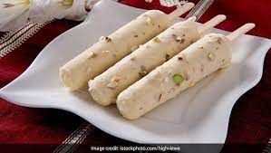

Kulfi

What is Kulfi?
Kulfi or Qulfi is a frozen dairy dessert originating in the Indian subcontinent in the
16th century. It is often described as "traditional Indian ice cream" and is a traditional sweet of the Indian
subcontinent
Ingredients
- 1 ¼ cups evaporated milk
- 1 ¼ cups sweetened condensed milk
- 1 (16 ounce) container frozen whipped topping, thawed
- 4 slices white bread, torn into pieces
- ½ teaspoon ground cardamom
Steps to make
- Combine evaporated milk, condensed milk and whipped topping in a blender and blend in pieces of bread until
smooth.
- Pour mixture into a 9x13 inch baking dish or two plastic ice cube trays, sprinkle with cardamom and freeze
for 8 hours or overnight.
Back to Top
Back to Main Menu